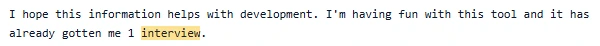
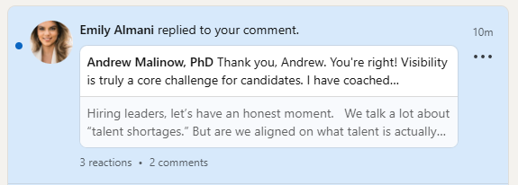
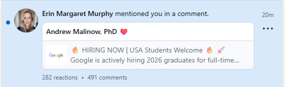
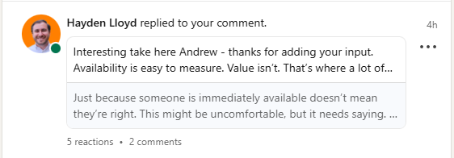

Stop resume blasting. Start hiring conversations.
Junior finds the LinkedIn posts recruiters and hiring managers are writing right now, comments in your voice from your background, and brings their replies into one inbox so you can follow up. Turn on Easy Apply and it can apply to fresh jobs too, using only answers you've given it.
14 days free with no credit card. Then $9.99/month on Basic. Desktop app for Windows and Mac.
"I'm having fun with this tool and it has already gotten me 1 interview."

Get seen where hiring actually happens
Many roles get filled through conversations before or alongside the job post. Junior puts you in those threads every day, without hours of scrolling.
-
Tell Junior what you want
Add your background, the roles you're after, where you want to work (on-site, hybrid or remote, within a radius you set) and the companies you'd love to work for.
-
Junior finds hiring posts
It looks for real openings posted by the employer's own recruiters, hiring managers and teams, judged by where the job is. Staffing agencies, reposted jobs and anything off-topic are skipped.
-
It comments as you
Each comment is written from your experience for that specific post, so it sounds like you, not a template.
-
You take the conversation
Replies land in one inbox with a drafted response, so you can move a promising thread toward an interview.
Thoughtful comments get hiring-side responses
Replies from real LinkedIn conversations started with Junior.



Apply to fresh jobs between comments
Optional and off until you turn it on. Junior searches LinkedIn Jobs for the roles and places you set, Easy Apply jobs only, newest first, and fills in each application from answers you saved.
Fresh jobs that fit
By default Junior only opens jobs posted in the last hour and skips jobs with more than 100 applicants. Titles and places that don't match your search are skipped too.
Your answers, never guesses
Save your answers once: work authorization, sponsorship, years of experience, degree, pay and start date. If a required question has no saved answer, Junior skips that job and the question waits for you. Answer it once and Junior goes back to the jobs that were waiting on it.
Dry run until you say so
Until you turn on submitting, Junior fills each application up to Review, saves a screenshot and discards it. Nothing is sent. Once on, it submits at most 3 a day in the first week.
Paced, with a daily limit
A few applications at a time, only in the hours you choose, up to your daily limit (10 by default, 25 at most). If LinkedIn shows a limit or a warning, Junior stops applying for the day.
Companies you skip
Junior never applies to companies on your block list, such as your current employer, to a company you applied to in the last 30 days, or to a job you already applied to.
Applications next to your targets
Each job is listed once with its latest status: applied, filled to Review, waiting for your answer, skipped or couldn't finish. Jobs at the companies you're targeting show up next to those companies, with what Junior's comments got you there.
What it doesn't do: Junior only handles LinkedIn Easy Apply, not applications on company websites. It sends the resume LinkedIn selects for you and doesn't write cover letters. Demographic questions get "decline to answer" when that option is offered. Easy Apply runs in the desktop app when Junior comments as you on hiring posts, and it's included on Basic, Starter and the 14-day trial.
Priced for a job search
Start Basic free for 14 days with no credit card. Add a card any time to keep going after the trial, and cancel anytime, including the day you sign your offer.
Basic
- Up to 10 comments a day
- Finds hiring posts by role, company and topic
- Comments written from your background
- Replies inbox for recruiter conversations
- Optional Easy Apply to fresh jobs
Starter
- Up to 20 comments a day
- For a wider search across more companies
- Replies inbox and Run Insights
- Optional Easy Apply to fresh jobs
- Email support
Coach job seekers or run a career program? Partner with us. Already a customer? Manage your subscription.
Recruiters see a thoughtful person, not a bot
No generic comments
Junior writes from your bio, goals and tone for each specific post. No templates, no "Great insight!"
Runs on your computer
Your own browser, your own login. Your LinkedIn password is never sent to us.
Paced like a person
Junior waits between actions and stays within the daily limit you choose.
You see everything
Every posted and skipped comment is listed with a link back to LinkedIn.
An honest note: no LinkedIn automation is completely risk-free, and LinkedIn's rules can change. Junior is designed to keep the risk low with local execution, conservative pacing and full visibility. See our Terms of Service.
Common questions from job seekers
Will this guarantee interviews?
No tool can guarantee interviews. Junior helps you start more relevant conversations with recruiters and hiring managers, which can lead to better opportunities.
Does this replace applications?
No. Commenting works alongside your applications by making you visible in the hiring conversations happening on LinkedIn. If you turn on Easy Apply, Junior can also fill in LinkedIn Easy Apply applications for you.
Can Junior apply to jobs for me?
Yes, for LinkedIn Easy Apply jobs, if you turn it on. Junior fills each application from answers you saved and never guesses a required question: that job is skipped and the question waits for you. Until you turn on submitting, Junior stops at the Review page and sends nothing. It's included on every plan that comments as you, including the 14-day trial.
Which plan should I pick?
Start with Basic. Ten thoughtful comments a day is plenty for most searches. Move to Starter if you're targeting a lot of companies or roles at once.
How fast can I start?
Setup takes a few minutes in the desktop app. After that, Junior starts finding posts and commenting the same day. See the setup guide.
Do I need to keep my computer on?
Yes, while Junior is working. It runs in the desktop app, so it only comments and applies while the app is open and the computer is awake.
Start better conversations this week.
Free for 14 days, then $9.99 a month. Cancel anytime.